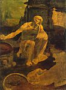
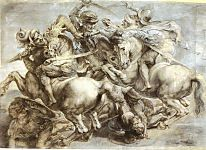

Леонардо Да Винчи
Щёлкните на изображение, чтобы его увеличить
1 
2 
3 
4 
5 
6 
7 
8 
9 
10 
11 
12 
13 
14 
15 
16 
17 
18 
Леонардо да Винчи
(1452,Винчи – 1519,Кло-Люце)

Введение
Универсальный гений, символ ренессанса, Леонардо да Винчи простирает свое влияние далеко за пределы мира живописи, к которому он изначально принадлежал, и одним из столпов которого он остается уже более пяти столетий. Его слава как художника, лишь подчеркивает парадоксы его удивительной судьбы. Тосканец, который следовал идеалам кватроченто, стал его символом и, наконец, вышел далеко за его рамки, Леонардо да Винчи покинул Флоренцию тридцатилетним, так и не добившись успеха. Короткий промежуток жизни в Милане стал пиком его карьеры, за которым последовала беспокойная старость, закончившаяся на берегах Луары. Как художник, он создал очень небольшое количество произведений (иногда незаконченных): около десяти работ упоминается в архивных документах или свидетельствах современников, и в общей сложности около тридцати работ ему приписывается (из них около трети утеряно). Человек с неослабевающим любопытством, он с одинаковой страстью занимался математикой, естественными науками, живописью и техническими науками; от него остались записи, тысячи рисунков и набросков, потрясающие планы – однако никаких реальных или научных достижений, ни одного печатного труда. Со стороны Леонардо казался потрясающим мастером на все руки, авантюристом от научных исследований, которые были единственным, что его интересовало, и погруженность в которые сдерживала не его творческую силу, а его волю к созиданию. Разгадывание «тайны да Винчи» веками провоцировало появление многочисленных литературных произведений, как художественных, так и научных. Эта краткая статья позволяет нам лишь наметить основные вехи карьеры Леонардо, перечислить области его интересов, и в общих чертах описать его деятельность как художника.
Жизнь и творчество
Введение
Жизнь Леонардо – мучительная, неуверенная и лишенная тех драматических моментов, которые были характерны для Микеланджело и Караваджо – может быть довольно точно разделена на три примерно одинаковых периода (не считая годы его детства): первый – флорентийский, заканчивающийся в 1482 году, - был периодом обучения, когда Леонардо в наибольшей степени интересовался живописью; второй (1482-1499) он провёл при Миланском дворе, где с занятиями живописью уже состязалось инженерное дело, скульптура, украшение интерьеров; и, наконец, третий период, кочевой, когда теоретические научные исследования стали занимать всё большее место, не замещая, однако, его художественных интересов.
Флорентийские годы
Леонардо
родился в 1452 году в Винчи (Vinci), маленьком
городке, расположившемся на отрогах Апеннин среди виноградников и оливковых
рощ; здесь он прожил до шестнадцати лет. Будучи внебрачным сыном молодого
землевладельца, ставшего впоследствии нотариусом Синьории, он едва знал
собственную мать, происходившую, несомненно, из простонародья. В те времена,
когда незаконнорожденные дети никого не удивляли, его воспитывали отец и
бабушка с дедушкой. Однако не стоит полагать, что он был «разочарованным»
ребёнком, каким его иногда преподносят (Фрейд даже посвятил ему своё
знаменитое эссе). Гораздо заметнее то, что он вынес из своего деревенского
детства: знакомство с пейзажами Тосканы, ее ландшафтами (самый ранний рисунок
Леонардо, известный на сегодняшний день, изображает вид долины Арно; он датирован он 1473 годом), животными, растениями,
природными диковинами (например, та пещера, которую он исследовал, несмотря
на свой страх, который превозмогало желание найти «странные проявления
коварной природы»), а также, возможно, неловкость его социального поведения и
склонность к одиночеству.
В 1496 году, когда умер его дед, юноша вместе с отцом и дядей перебрался во
Флоренцию, где он поступил в мастерскую Верроккьо (Verrocchio),
в одинаковой степени известного как скульптор и как художник. Вступив в 1472
году в гильдию художников, Леонардо, видимо, завоевал доверие мастера, приняв
участие в его главной картине, «Крещение Христа» (Baptism
of Christ) (1) (говорят,
что он исполнил фигуру коленопреклонённого ангела и задний план картины).
Его отмечали за личную красоту, силу, вкус к математике и музыке, а также за
его пристрастие к «греческой» любви, что было очень модным в то время (донос 1476
не имел последствий, но едва ли оставлял место для сомнений). С 1480 года он
больше не живёт с отцом, а перебирается в дом неподалёку от монастыря Сан
Марко (San Marco),
купленный Лоренцо Медичи, который нанял художника для украшения своих садов.
Однако роль Леонардо была весьма скромной. Он держался на расстоянии от двора
гуманистов, любимым художником которого был Боттичелли, а провидцем – Марсилио Фичино. Более склонный
к научному и позитивному мышлению, чем к мистике, он, казалось, отгородился
от снобизма неоплатоников. Он находил заказы в других местах: в 1478 году – у
Синьории (алтарный образ капеллы Палаццо Веккьо,
завершённый Филиппино Липпи);
в 1481 – в монастыре Сан Донато в Скопето («Поклонение волхвов»
(2) из музея Уффици, которое он оставил незавершенным); а также некоторые незадокументированные картины («Благовещенья» в Лувре и
Уффици, «Мадонна Бенуа» в Эрмитаже Санкт Петербурга
и т.д.), которые, вероятно, также принадлежат к этому периоду. Однако Леонардо
продолжал оставаться на вторых ролях, и в 1482 году он не был включён в
группу, отправившуюся в Рим для украшения Сикстинской Капеллы. Работая
медленно и желая освободиться от материальных проблем, он искал (и всю жизнь
продолжал искать) благодетеля, способного оценить многообразие его талантов.
И первого такого покровителя он встретил в Милане.
Миланские годы
Узнав,
что Людовико Сфорца (Мавр),
желает установить конную статую в честь своего отца Франческо,
Леонардо весной 1482 года переезжает в Милан и предлагает «обучить своим
секретам» правителя: знаменитое прошение в десяти главах излагало его
способности инженера в укреплении городов и гаваней, изготовлении бомбард и
защищённых танков; в мирное же время его работа «могла в равной степени быть
использована при возведении строений, как общественных, так и частных, или при
перемещении воды из одного места в другое»; не забыты были при этом и скульптура с живописью. Поступив на службу к
Людовику, который относился к нему с почтением и создавал ему все необходимые
для работы условия, Леонардо несколько лет занимался конной статуей, и после бесчисленных
набросков в 1493 году на обозрение была выставлена лишь модель лошади,
исчезнувшая после падения семьи Сфорца. Помимо того, что у Леонардо оставалось много свободного времени для
изучения математики (он часто посещал ученых Павии Pavia), и подружился с Лукой Пачиоли
(Luca Pacioli) и
осуществления исследований в области естественных наук, он также подвизался и
на других поприщах: как организатор спектаклей и процессий, декоратор Кастелло Сфорцеско (Castello Sforzesco) (комната « делле Ассе» (delle
Asse) с потолком, оплетённым зеленью),
инженер-гидравлик, который подводил воду к
рвам замков; реставратор «Сфорцески» (“Sforzesca”), образцовой фермы герцога. Несмотря на
враждебность Браманте, «флагмана» архитектуры
Ломбардии, он подготовил план фонаря для Миланского собора (1487), и был
привлечён в качестве консультанта при реставрации собора Павии
(1490).
Помимо портретов – очаровательных, но незадокументированных
(«Портрет неизвестной женщины» (la Belle Ferronniere) (4) (Лувр),
«Музыкант» (the Musician)
(5) (Милан), «Дама с горностаем» (Lady in Ermine) (6) (Краков) и т.д.
– заказы на картины художник получал лишь в начале и в конце миланского
периода. В 1483 году от братства непорочного зачатия (Brotherhood of the Conception) поступил заказ
на изготовление алтарного образа для церкви Сан Франческо Гранде (San Francesco Grande). Боковые створки были поручены Амброджо ди Предису,
в то время как Леонардо должен был заняться центральной частью, мадонной с
младенцем. Ныне эта картина скорее идентифицируется с
«Мадонной в гроте» (Virgin of the Rocks) (7) из Лондона
(Национальная Галерея), чем с парижской, которая, скорее всего, была
выполнена немного раньше; оставшись незавершённой, эта картина стала
предметом спора с братством, спора, который не мог разрешиться вплоть до 1506
года. С другой стороны фреска «Тайная вечеря» (Last Supper) (8), начатая в 1496 году для трапезной
монастыря Санта Мария делла Грацие (of Santa Maria delle Grazie),
и законченная в 1498, вызвала единодушное восхищение и поставила Леонардо в
один ряд с выдающимися мастерами Италии.
Годы скитаний
Однако
«Тайная вечеря» была лебединой песней счастливой эпохи: на следующий год Людовико бежал, изгнанный армиями Людовика XII. Леонардо
некоторое время пробыл в Мантуе (Mantua) при дворе своей почитательницы Изабеллы д’Эсте (портрет которой, выполненный углём, ныне висит в
Лувре), в Венеции (1500), в Романье (Romagna) (1502), где он находился под покровительством Чезаре Борджиа (Cesare Borgia), который нанял
его в качестве инспектора укреплений. Однако
упразднение новым Папой Юлием II кондотьеров положило конец этому эпизоду. В
1503 году Леонардо вернулся во Флоренцию, где умер его отец; он был принят с
почестями, однако здесь он столкнулся с молодым сильным соперником –
Микеланджело. В честь великих побед Флоренции, Синьория заказала ему фреску в
честь «Битвы при Ангиари» (Battle of Anghiari), в то время
как Микеланджело увековечил «Битву при Кашине» (Battle of Cascina). Оба картона
были одновременно выставлены в 1505 году, и обнажённые герои Микеланджело
пользовались большим успехом, нежели яростная схватка кавалерии, изображённая
Леонардо. Последний довольно быстро оставил проект этой фрески. Так как картон был уничтожен, работа известна лишь по
некоторым предварительным наброскам и копиям (то же самое относится и к знаменитой «Леде» (Leda) (9)). Вдобавок к этой неудаче, из-за ошибок в
расчётах провалился проект поворота реки Арно с
целью осады Пизы, выполненный по планам Леонардо. Уязвлённый насмешками, он
покинул отчизну и вернулся в Милан, где его чествовали французские оккупанты;
Шарль Д’Амбуаз (Charles d'Amboise), наместник, отметил, что «его имя, увековеченное
в живописи, осталось в других сферах тусклым, по сравнению со славой, которую
он определённо заслуживал». Леонардо вновь обратился к некоторым старым
планам по улучшению города и принял заказ на новую статую всадника, в этот
раз предназначенную для гробницы Джанджакомо Тривульцио (Giangiacomo Trivulzio) – кондотьера, который изгнал Сфорца! Однако в 1512 году французов в свою очередь изгнали
из города.
Теперь Леонардо вызвали в Рим. Новый папа, Лев X,
принадлежал к семейству Медичи и был покровителем искусства. Однако
человеком, на которого он возложил свои надежды, был Рафаэль. Джулиано Медичи, брат понтифика, стал заступником
Леонардо. Обеспечив его кровом и дав задание осушить Понтийские болота (Pontine Marshes), он добился
утверждения этого проекта. Но когда смерть Браманте
освободила место управляющего работами в соборе святого Петра, никто даже не
вспомнил о старом мастере. Поглощённый своими исследованиями по квадратуре
круга, а также изучением анатомии, он выглядел мечтателем, хрупким пришельцем
в реальном мире. Вот каким его видел друг Рафаэля Бальдассар
Кастильоне (Baldassarre Castiglione) (Il Cortegiano, 1508–1518)): «один из самых выдающихся
художников в мире приступил к изучению философии, в которой вывел концепции
настолько странные и идеи настолько новаторские и фантастические, что он не
сможет изобразить их даже тончайшей кистью».
Едва ли удивительно, что уставший, разочарованный и лишившийся лучшего
источника поддержки со смертью Джулиано в 1516
году, Леонардо вынужден был принять приглашение победоносного юного короля,
мечтавшего перенести стиль жизни итальянских дворов в шато
на берегу Луары. В мае 1516 года он предстаёт перед Франциском I (Francois I) в компании своего любимого ученика, юного
красавца Франческо Мельци
(Francesco Melzi)
(1493-1570), захватив с собой несколько шедевров, написанных в годы
скитаний, которые король у него купил (ныне они представлены в Лувре): «Мона Лиза» (10), «Мадонна и младенец со святой Анной» (
the Virgin and Child with St Anne) (11), «Святой Иоанн
Креститель» (St John the Baptist) (12) и, без
сомнения, «Вакх» (Bacchus) (13), переделанный из
другого «Иоанна Крестителя». Его жилище в поместье Клу
(Cloux Manor), неподалёку
от Амбуаза (Amboise),
солидная пенсия и дружба монарха, любившего слушать его, обеспечили ему
благородную и безмятежную старость после стольких несчастий. Паралич руки
заставил его отказаться от живописи, но не от творчества. Планы
монументальных лестниц (которые, должно быть, повлияли на лестницу в Шамборе (Chambord), канала
между Луарой и Соной, осушение Солони
и создание нового города в Роморантене (
Romorantin), говорят о его желании «продолжать». Однако
весной 1519 года Леонардо слёг с болезнью; он назначил Мельци
своим душеприказчиком и завещал ему все свои рукописи. Он умер 2 мая и был
похоронен церкви Святого Флорентина (Saint-Florentin)
в Амбуазе, однако прах его был развеян во время религиозных
Войн.
Мыслитель, учёный
Эта
жизнь, где слава тесно переплетена с неудачами, соответствует характеру
Леонардо, характеру человека, непонятого своими современниками, которые считали
его непостижимым, и до сих пор удивляющего нас в сохранившихся свидетельствах
силой своего мышления. Его зеркальное письмо - вызов мастерству криптографов-экспертов. Его многочисленные записи,
распространённые среди его почитателей сыном Мельци,
прошли через многие невзгоды: наиболее важные манускрипты хранятся в
Библиотеке Амброзии (Ambrosian Library)
в Милане и в «Институте Франции» (Institutт de France).
Некоторые рукописи были потеряны, а некоторые лишь в 1967 году были вновь
найдены в Национальной Библиотеке Мадрида. Разрозненные записи научных
наблюдений, дополненные набросками, записками о методах, и философскими
размышлениями, они ничуть не проливают свет на жизнь и чувства их автора. Безмолвие
– это часть того, что Валери называл «высокомерным
безразличием» Леонардо: безразличный к сиюминутной славе, к мирским благам,
за исключением тех, что гарантируют свободу его исследованиям; с
непредсказуемыми переменами настроения, опасениями, колебаниями между
энтузиазмом и скукой в процессе работы, с отказами от работы, вызванными
постоянной потребностью в совершенствовании. И лишь одна единственная страсть
гнала его вперёд – абсолютное познание структур и движений видимой вселенной.
Это был «интеллектуальный накал, который окрылял чувственность» и из которого
рождалась «любовь […], растущая по мере того, как знание
становилось все более конкретным».
Безусловно, рациональное знание. Стоит ли нам верить Вазари (Vasari), согласно которому Леонардо «был философом в
большей степени, нежели христианином»? В любом случае, понятия греха и
искупления, христианская драма спасения не трогали его. Более того, похоже,
он был в равной степени безразличен к языческой эстетике своих современников,
к мифологии, а также к древней истории. С неким безмятежным стоицизмом, требовавшим
уединения, он, как истинный ученый, отвергал аргументы авторитетов и составлял
своё мнение исключительно на основе экспериментов.
Но что это был за учёный? Леонардо долгое время казался
гением-самоучкой (он сам писал: «Люди полагают, что
они могут меня критиковать, утверждая, что у меня нет образования»),
непонятым предвестником. В начале XX века произошла обратная реакция, Леонардо
превратили в человека образованного, наследника научного мышления средних веков.
Сегодня господствует некое усреднённое представление: Леонардо не был
неграмотным, он получил обычное для того времени и уровня флорентийской
культуры образование. Он знал латынь, был знаком с «Метаморфозами» Овидия; он
знал Данте и Петрарку, однако ко всему прочему он был воспитан на морализаторских
зоологиях и бестиариях, столь популярных в средние века, и сатирах
флорентийских рассказчиков.
Его образ космоса как взаимодействия гармоничных сил и хранилища света, с
глубоким объединением мира природы с миром души, - происходит из общераспространенного
учения неоплатонизма того времени и дополняется доктриной движения, как основы
всякой жизни, Николаса де Куса.
Устные занятия для практических целей (геометрия, перспектива и т.д.),
начавшиеся в мастерской Верроккьо, были впоследствии дополнены чтением
различных трактатов по механике и посещениями «театров машин», которых в
Италии второй половины XV века было довольно много, а также общением с
различными учёными. Леонардо никогда не был учёным как Коперник или Ньютон, которые
давали новую жизнь науке своими теориями и открытиями. Его физическая
терминология оставалась неточной и противоречивой. На самом деле, чествуя
«высшую достоверность математики», он остается прежде
всего человеком взгляда, для которого глаза – «окна души - основной путь,
через который наш интеллект в полной мере сможет оценить бесконечную работу
природы». Его вселенское любопытство отрицает различия между теоретической и
прикладной наукой, между изящными и прикладными искусствами. Он расширил и
поднял на новую высоту тот тип инженера-художника, самым ранним примером которого был Альберти.
Его исследования в равной степени касаются астрономии и геологии, геометрии и
механики, оптики и акустики, ботаники и металлургии. Однако в его дневниках можно
найти три «определяющие области», отраженные то множеством записей, то разрозненными
заметками. Первая область – анатомия, с короткими пометками, – плод
многочисленных вскрытий, иллюстрированная невероятными рисунками, некоторые
из которых посвящены сравнительной анатомии (юноша-старик; человек-животное).
В ней Леонардо выступает в роли предвестника Везалия (Vesalius)
– основателя современной анатомии. Затем идёт механика применительно к работе
инженера – с баллистическими изобретениями, танками, помпами и экскаваторами,
мостами и каналами, а также планами летающих машин, основанными на проницательном
анализе полёта птиц. И, наконец, собственно жизнь на земле, сквозь призму
механики жидкостей и геологии. Ничто так не восхищает поэтическое воображение
Леонардо, как «героический балет» земли и воды. Отсюда берут свое начало исследования
водоворотов, прекрасные панорамные
наброски, показывающие образование альпийских долин; отсюда начался анализ
окаменелостей, форм раковин, причин их появления не только в морях, но и в
горах. Помимо всего прочего, отсюда вышли и апокалипсические видения,
соединяющие судьбу человека с космическими катаклизмами: «Можно будет видеть
на земле существа, которые постоянно будут сражаться друг с другом, и с
величайшим уроном и часто смертью для той и другой стороны. Они не будут
знать предела своей злобе; для жестоких членов их тела падает на землю
большая часть деревьев великих лесов вселенной… О
земля, почему ты не разверзнешься, чтобы сбросить их в глубокие трещины своих
великих пропастей и недр». Такого Леонардо, космического провидца и «мага», с
чертами, смягчёнными бородой и вьющимися волосами мы видим на строгом
автопортрете, нарисованном сангиной, из Туринской королевской библиотеки.
Художник
Что
же осталось от огромных усилий этого человека на ниве изобразительного
искусства? Для архитектуры и скульптуры – некоторые планы, причем для архитектуры
- чисто теоретические. Несколько крайне изящных рисунков церквей с
центральным куполом и апсидиолами по бокам,
напоминающих проекты Браманте, соответствуют склонности
ренессанса к строениям центрированного плана, символу совершенства. В области
скульптуры были сделаны многочисленные наброски памятников Сфорца и Тривульцио; однако,
похоже, что Леонардо интересовал лишь пьедестал и движение лошади, которая
стояла то выше, то ниже поднявшись на дыбы; всадник
либо присутствовал в виде наброска, либо же вовсе отсутствовал. Ни об одной
скульптуре нельзя с точностью сказать, что она принадлежит его руке, даже о
наиболее вероятном кандидате – небольшой бронзовой группе всадников в
Будапеште. В целом, Леонардо едва ли очень интересовала скульптура: тот факт,
что времени на неё уходило куда больше, чем на картины, не придавал её
дополнительных достоинств; в сравнении с живописью, искусство скульптуры было
«второстепенным, так как не могло отображать прозрачные и светящиеся
предметы». Оно остаётся «искусством очень краткой беседы», в то время как
живопись – «cosa mentale»,
чья «цель изображать человека и намерения его души» «невероятно искусна и в
высшей степени гипотетична».
Возможно, Леонардо посвятил трактат этому главному искусству. Трактат, как говорили, был написан в Милане и передан
Людовико, после чего исчез. «Трактат о живописи» (Trattato della pittura) (14) (Codex urbinas, Библиотека Ватикана), опубликованный в середине
XVII столетия, - это массивная, неуклюжая компиляция, составленная Мельци. Дневники (15) предлагают нам множество
проницательных наблюдений относительно всех аспектов искусства художника,
чертежей, перспективы и техники иллюстрации. Ключевым моментом становится
приоритет рисования с натуры перед изучением древностей и изображением поверх
контуров. Секрет живописи заключается во взаимодействии теней и света, т.е.
светотени: «тот, кто избегает применять тени, делает свою работу презренной
для культурного взора в угоду взору пошлому, ищущему яркие цвета и
пренебрегающему красотой и чудом света». Записи Леонардо о
розовой дымке раннего утра, об отдалённом эффекте городского дыма и пыли,
цвете далёких гор, которые зимой уже не голубые; или красном цвете солнца во
время дождя, часто хвалят за их дотошную и в то же время поэтичную
«современность». И этот «люминизм» объясняет
важнейшую историческую роль художника, который был весьма скуп на
произведения. Самые ранние из дошедших до нас полотен Леонардо
выполнены во флорентийской традиции необычайно умело и немного суховато. Липпи,
Верроккьо, Гирландайо присутствуют в «
Литте» (16) и Мадоннах Бенуа (обе - Эрмитаж), в
«Благовещеньях». Неоконченный «Святой Иероним» для
Ватикана – замечательное скульптурное изучение анатомии. «Поклонение волхвов»
в Уффици отличается лишь оригинальной концепцией построения, заместившей
роскошный кортеж, лучший пример которого дал Гоццоли
(Gozzoli), в виде рассеянной толпы, как бы охваченной
паникой в незнакомом месте. Однако миланские работы (было ли это влияние
влажного зелёного пейзажа Ломбардии?) создают затуманенную, таинственную
модель «сфумато», используя серые тона в отдалёнии,
что видно в «Мадонне в гроте», с её загадочной водой на заднем плане и остроконечными
скалами, таящими на свету над полумраком грота. А фурор, произведённый
«Тайной вечерей» - единственной завершённой полномасштабной картиной,
пребывающей, к сожалению, в жалком состоянии – следствие не только лишь
новизны композиции, копирующей задумку Андреа дель Кастаньо, однако
разделяющей апостолов на группы по разным сторонам: психологическая драма,
последовавшая за сообщением о предательстве и неуверенность в имени
предателя; ещё одно важное новшество – пространственная интеграция,
осуществляемая при помощи мягкости цвета, полутонов фигур на фоне перспективы
голубых холмов на заднем плане. Ещё одна привлекательная черта
Леонардо-художника заключается в загадках лиц на картинах его позднего
периода. В «Мадонне с младенцем и со Святой Анной», на которой мадонна
бросается к младенцу, будто бы защищая его, святая Анна остаётся неподвижной
и улыбается, словно сфинкс, сообщающий о неотвратимости судьбы. Спокойный, задумчивый лик Моны
Лизы, напуганный и отстранённый лик Леды, лики святого Иоанна Крестителя и Вакха. Портрет ли это флорентийской
дамы (Мона Лиза, супруга Франческо
дель Джокондо), или же
вымышленные персонажи, везде мы встречаем это изящное, иронично улыбающееся андрогинное
лицо, с его «нежной меланхолией», очаровавшей Стендаля: мечтательные образы, согласно
декадентскому эстетизму конца 19 столетия, олицетворяющие тайну вселенной.
Однако творение Леонардо наделено исторической важностью и символическим
значением даже в глазах тех, кого раздражает подобное «оджокондивание».
Что касается рисунков, то все наши современники согласны, что их одних достаточно
для того, чтобы поставить Леонардо в один ряд с другими великими мастерами.
Тысячи рисунков Леонардо известны, и ни один из них не лишен художественной
ценности. Большинство набросков поясняют текст, что не умаляет их
эстетической важности. Рассматривая отдельные рисунки и огромные
альбомы Виндзора и Амброзии, мы будем поражены из
насыщенностью, их наполненностью жизнью и
разнообразием.
Разнообразием техники: рисунки серебряным карандашом в молодости, постепенно
сменяемые сангинами; более мягкие, нежные рисунки,
выполненные чёрным камнем со штрихами белого мела; неизменные быстрые рисунки
пером, комментарии к тексту или предварительные планы работ. Также поражает
разнообразие стилей: некоторые рисунки выполнены просто с ювелирной
тщательностью, такие как знаменитый профиль мужчины
в шлеме (Британский музей); другие же могут быть сведены к переплетению дуг и
петлей, которые с исключительной силой передают движение (этюды кошек,
кавалерия в «Битве при Ангиари» (18)). Существует
также огромное разнообразие сюжетов, отображающее личный мир Леонардо: уже
упоминавшийся мир науки и мир живописи. Существует множество этюдов
«Поклонения волхвов», Мадонн, «Тайной вечери», «Битвы», очаровывающих нас
возможностью следить за кризисами сознания автора, его поисками. Есть и
«выразительные головы», иногда героические, чаще с гримасами, иногда и вовсе
карикатурные, с жестким подчеркиванием возраста или характера; существуют
этюды животных, преимущественно, лошадей; наброски цветов и ветвей, выполненные
любящей, но иногда до неприятности точной рукой. Наконец, есть пейзажи,
иногда изображающие сельский вид с пахарями и сеятелями, а иногда –
стихийный, конвульсивный мир: виды потопа - одно из самых удивительных видений
Леонардо.
Помимо всего прочего, на протяжении веков люди восхищались именно «фигурой
мечтателя». Художник оказал значительное влияние на ближайших потомков, судя
по многочисленным вариантам и копиям XVI века, которые до сих пор вызывают у
критиков страшную головную боль, и судя по фурору,
который произвёл Леонардо среди некоторых молодых флорентинцев, склонных к
изящному (Лоренцо ди Креди
(1456-1537) или Пьеро ди Козимо
(1462-1521); а также судя по влиянию, которое он
оказал в Ломбардии на грубоватую, крепкую группу: Бернардино
Луини (1485-1532), Амброджо
де Предиса (1455-1510)
и Джованни Антонио Больтраффио
(1467-1516).
Последняя великая фигура кватроченто, он был также родоначальником
«Высокого Ренессанса»: его влияние можно встретить у Рафаэля (который
использовал задумки миланских «Апостолов» для «Школы в Афинах»), у Фра Бартоломео (1472-1517) и у Андреа дель Сарто
(1486-1530). Но прежде всего нужно помнить о том, какую блестящую дорогу
проложила его неукротимая любознательность для деятелей культуры следующих
четырех столетий: Рубенс и Прюдон, Гете, Стендаль и
Валери воздавали ему почести как великому
художнику, как всесторонне одаренному человеку и учёному.

© 2006 Umanista.Net